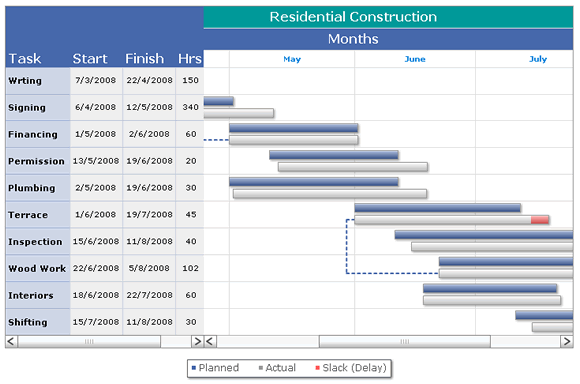

Gantt Chart > Overview |
The Gantt chart is a specialized chart used for displaying various timelines like project timelines, development timelines etc. It can be used for any of the following:
In short, Gantt charts help you monitor progress of a project. You can immediately see what should have been achieved at a point in time. Also, they allow you to judge how remedial action may bring the project back on course, if it's running off the track. FusionWidgets Gantt chart is a date/time based Gantt chart that allows you to plot the tasks visually i.e., for each task you’ll have to provide the exact start and end date/time. A typical FusionCharts Gantt chart looks as under: |
|  |
|
| Features |
FusionWidgets Gantt chart offers you the following features:
|